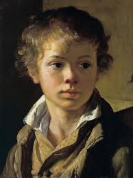

Виды изобразатильного исскустваWe are giving special services
Портрет
Портрет в литературе — одно из средств художественной характеристики, состоящее в том, что писатель раскрывает типический характер своих героев и выражает своё идейное отношение к ним через изображение внешности героев: их фигуры, лица, одежды, движений, жестов и манер.В изобразительном искусстве портрет — это самостоятельный жанр, целью которого является отображение визуальных характеристик модели. Портрет — это повторение в пластических формах, линиях и красках живого лица, и одновременно при этом его идейно-художественная интерпретация.

Портре́т (фр. portrait, от старофранц. portraire — «воспроизводить что-либо черта в черту», устар. парсуна — от лат. persona — «личность; особа») — изображение или описание какого-либо человека либо группы людей, существующих или существовавших в реальной действительности, в том числе художественными средствами (живописи, графики, гравюры, скульптуры, фотографии, полиграфии), а также в литературе и криминалистике (словесный портрет).«На портрете изображается внешний облик (а через него и внутренний мир) конкретного, реального, существовавшего в прошлом или существующего в настоящем человека»[4]. Портрет — это повторение в пластических формах, линиях и красках живого лица, и одновременно при этом его идейно-художественная интерпретация.

Автопортрет
Портрет художника, выполненный им самим (большей частью при помощи одного или нескольких зеркал).
Портрет-картина
Портретируемый представлен в смысловой и сюжетной взаимосвязи с окружающими его миром вещей.
Групповой
Портрет, на котором изображено не менее трех персонажей, находящихся в одной обстановке.
Костюмированный
Человек представлен в виде аллегорического, мифологического, исторического, театрального или литературного персонажа.
Исторический
Изображает какого-либо деятеля прошлого и создаваемого по воспоминаниям или воображению мастера.
Религиозный
Древняя форма портрета, когда человек, сделавший пожертвование, изображался на картине или на одной из створок алтаря.
© 2017 Learn Kids. All rights reserved | Design by Kurma.